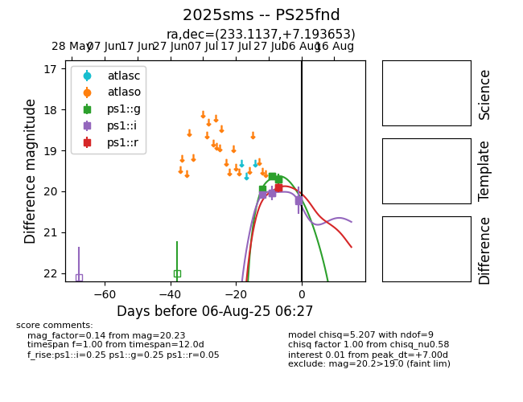

Target 2025sms at 2025-08-06 06:40, see:
TNS: wis-tns.org/object/2025sms
YSE: ziggy.ucolick.org/yse/transient_detail/2025sms
alt names
2025sms (yse,tns)
PS25fnd (panstarrs)
coordinates:
equatorial (ra, dec) = (233.1137,+7.19365)
galactic (l, b) = (12.8945,+46.96853)
photometry
last ps1::g=19.70, ps1::i=20.23, ps1::r=19.90
5 ps1::g, 5 ps1::i, 2 ps1::r detections
